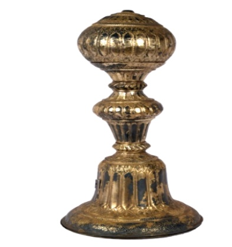

🔇 Is bhasha me is vastu ka audio abhi uplabdh nahi hai.
5. बिस्तर का पायाँ (Bed Stead Leg)

अभिलेख संख्या: XLIV-167
चाँदी जड़ा हुआ बिस्तर का पायाँ, जिसके नीचे का भाग गोल और चपटा जस्ता (ज़िंक) का है। निचला हिस्सा पतला (टेपर्ड) है और ऊपरी हिस्सा गोलाकार (स्फेरिकल) है, जिसमें दो छेद हैं जो जोड़ने वाली छड़ों (कनेक्शन रॉड्स) के लिए बने हैं। बीच में पत्तेदार किनारों के बीच एक लंबा पत्तेदार डिज़ाइन है। चाँदी जड़ा हुआ यह बिस्तर का पायाँ गोल चपटी जस्ता की नींव, पतले निचले भाग और गोल ऊपरी हिस्से के साथ बनाया गया है, जिसमें दो छेद हैं जो जोड़ने वाली छड़ों के लिए उपयोग किए जाते थे। भारत में प्राचीन काल से चाँदी का महत्वपूर्ण स्थान रहा है। इसके उपयोग के प्रमाण हड़प्पा सभ्यता से मिलते हैं और यह परंपरा भारतीय इतिहास के विभिन्न कालों में जारी रही। चाँदी का उपयोग आभूषण, सिक्के और संभवतः वज़न तथा व्यापार के मानक के रूप में भी किया जाता था। यह बिस्तर का पायाँ भारत का है और इसका काल उन्नीसवीं शताब्दी के उत्तरार्ध का है।
5. Bed Stead Leg
Acc No: XLIV-167
A silver-inlaid bed stead leg whose lower portion is a round, flat zinc base. The lower part is tapered and the upper part is spherical, with two holes made for connection rods. In the middle there is a long leafy design set between leafy borders. This silver-inlaid bed stead leg was made with a round flat zinc foundation, a tapered lower portion and a spherical upper portion carrying two holes that were used for the connecting rods. Silver has held an important place in India since ancient times. Evidence of its use comes from the Harappan civilisation and the tradition continued through various periods of Indian history. Silver was used for ornaments, coins and possibly also as a standard of weight and trade. This bed stead leg is from India and dates from the later part of the nineteenth century.
5. మంచం కోడు
Acc No: XLIV-167
ఈ మంచం కోడు 19వ శతాబ్దం చివరి భాగం నాటి భారతదేశం నుండి వచ్చిన కళాఖండం. ఈ మంచం కోడుకు వెండి పూత ఉంది. దీని అడుగు భాగంలో గుండ్రటి చదునైన జింక్ ఉంది, కింది భాగం సన్నగా ఉండి, పైభాగం గోళాకారంలో ఉంది, దీనిలో కలపడానికి వీలుగా రెండు రంధ్రాలు ఉన్నాయి. కింది మరియు పైభాగాల మధ్య ఆకుల అంచుల మధ్య పొడవైన ఆకుల ప్యానెల్ ఉంది. ప్రాచీన భారతదేశంలో వెండికి ముఖ్యమైన పాత్ర ఉంది; దీని వాడకం హరప్పా నాగరికత కాలం నాటికే ఉంది. నాణేలు, ఆభరణాలు మరియు బరువుల ప్రమాణంగా కూడా వెండిని ఉపయోగించేవారు.
۵. پلنگ کے پائے
Acc No: XLIV-167
چاندی سے مرصع پلنگ کا پایہ جس کے نچلے حصے میں گول اور ہموار زنک کی تختی نصب ہے۔ اور نچلا حصہ پیچدار ہے جبکہ اوپر کا حصہ گول ہے اور اس میں دو سوراخ موجود ہیں تاکہ جوڑنے والی سلاخیں اس میں نصب کی جا سکیں۔
درمیانی حصے میں ایک طویل پتا نما پینل آراستہ ہے، جو اطراف میں پتیوں کی باریک بارڈرکے درمیان نمایاں کیا گیا ہے۔ یہ آرائش اس کی فنی نفاست اور دھاتی کاریگری کا عمدہ نمونہ پیش کرتی ہے۔ چاندی قدیم ہندوستان میں اہم کردار ادا کرتی تھی، جس کے استعمال کے آثار ہڑپ پا تہذیب سے ملتے ہیں اور یہ ہندوستانی تاریخ کے مختلف ادوار میں بھی اس کی روایت برقرار رہی۔ چاندی کا استعمال زیورات، سکوں، اور ممکنہ طور پر وزن اور تجارت کے معیار کے طور پر بھی ہوتا تھا۔ یہ پلنگ کا پایہ ہندوستان سے تعلق رکھتا ہے اور انیسویں صدی کے آخر کا ہے۔
৫. খাটের পায়া
Acc No: XLIV-167
রুপোর আবরণে ঢাকা খাটের পায়া, যার নিচের অংশটি দস্তার তৈরি, গোলাকার, সমতল এবং ক্রমশ সরু হয়ে এসেছে। এর ওপরের অংশটি গোলাকার এবং সংযোগকারী দণ্ড বা রডের জন্য এতে দুটি ছিদ্র রয়েছে। লতাপাতার নকশা করা বর্ডারের মাঝখানে একটি লম্বাটে লতাপাতার প্যানেল রয়েছে। প্রাচীন ভারতে রুপো অত্যন্ত গুরুত্বপূর্ণ ভূমিকা পালন করেছিল, যার ব্যবহারের প্রমাণ হরপ্পা সভ্যতা থেকে শুরু করে ভারতীয় ইতিহাসের বিভিন্ন যুগে পাওয়া যায়। এটি গয়না, মুদ্রা এবং সম্ভবত ওজন ও বাণিজ্যের মানদণ্ড হিসেবেও ব্যবহৃত হতো। এই খাটের পায়াটি ভারত থেকে প্রাপ্ত এবং এটি ১৯ শতকের শেষের দিকে নির্মিত।
5. ખાટલાનો (માળખાનો) પાયો
Acc No: XLIV-167
આ ચાંદીથી આચ્છાદિત ખાટલાનું પાયું છે. તેના તળિયે ગોળ અને સમતળ ઝીંક (zinc)નો આધાર છે. પાયાનું નીચલો ભાગ ક્રમશઃ પાતળું (ટેપર) છે, જ્યારે ઉપરનો ભાગ ગોળાકાર (સ્ફેરિકલ) છે, જેમાં જોડાણની રોડ માટે બે છિદ્રો આપેલાં છે. મધ્ય ભાગમાં લંબાકાર પાંદડાની આકૃતિ ધરાવતો પેનલ છે, જે બંને બાજુ પાનાવાળી કોતરણીથી ઘેરાયેલો છે. ચાંદીથી મઢાયેલો આ ખાટલાનો પાયો ભારતીય કારીગરીનું સુંદર ઉદાહરણ છે. પ્રાચીન ભારતમાં ચાંદીએ મહત્વપૂર્ણ ભૂમિકા ભજવી હતી — હરપ્પા સંસ્કૃતિથી લઈને વિવિધ ઐતિહાસિક સમયગાળાઓ સુધી તેની ઉપયોગની સાક્ષી મળે છે. ચાંદીનો ઉપયોગ આભૂષણો, સિક્કા તથા ક્યારેક વજન અને વેપારના ધોરણ તરીકે પણ થતો હતો. આ ખાટલાનું પાયું ભારતનું છે અને તેનો સમય 19મી સદીના અંતકાળનો માનવામાં આવે છે.
5. ಬೆಡ್ ಸ್ಟೀಡ್ ಲೆಗ್
Acc No: XLIV-167
ಬೆಳ್ಳಿಯ ಹೊದಿಕೆಯುಳ್ಳ ಮಂಚದ ಕಾಲಿನ ಅದ್ಭುತ ಕಲಾಕೃತಿ ಇದಾಗಿದೆ. ಇದು ವೃತ್ತಾಕಾರದ ಸಮತಟ್ಟಾದ ಸತುವಿನ ತಳಭಾಗವನ್ನು ಹೊಂದಿದೆ. ಇದರ ಕೆಳಭಾಗವು ಕ್ರಮೇಣವಾಗಿ ಸಣ್ಣದಾಗುತ್ತಾ ಹೋಗಿದ್ದರೆ , ಮೇಲ್ಭಾಗವು ಗೋಳಾಕಾರದಲ್ಲಿದೆ ಮತ್ತು ಸಂಪರ್ಕಿಸುವ ಸರಳುಗಳಿಗಾಗಿ ಇದರಲ್ಲಿ 2 ರಂಧ್ರಗಳಿವೆ. ಎಲೆಗಳ ವಿನ್ಯಾಸವಿರುವ ಅಂಚುಗಳ ನಡುವೆ, ಉದ್ದವಾದ ಎಲೆಗಳ ಫಲಕವನ್ನು ಸುಂದರವಾಗಿ ಮೂಡಿಸಲಾಗಿದೆ. ಮತ್ತೊಮ್ಮೆ ಗಮನಿಸುವುದಾದರೆ, ವೃತ್ತಾಕಾರದ ಸಮತಟ್ಟಾದ ಸತುವಿನ ತಳಭಾಗವನ್ನು ಹೊಂದಿರುವ, ಕೆಳಗೆ ಸಣ್ಣದಾಗುತ್ತಾ ಮೇಲ್ಭಾಗದಲ್ಲಿ ಗೋಳಾಕಾರವಾಗಿರುವ ಹಾಗೂ ಸಂಪರ್ಕದ ಸರಳುಗಳಿಗಾಗಿ 2 ರಂಧ್ರಗಳನ್ನು ಹೊಂದಿರುವ ಬೆಳ್ಳಿಯ ಹೊದಿಕೆಯ ಮಂಚದ ಕಾಲು ಇದಾಗಿದೆ. ಪ್ರಾಚೀನ ಭಾರತದಲ್ಲಿ ಬೆಳ್ಳಿಯು ಮಹತ್ವದ ಪಾತ್ರವನ್ನು ವಹಿಸಿತ್ತು. ಹರಪ್ಪಾ ನಾಗರಿಕತೆಯ ಕಾಲದಿಂದಲೂ ಇದರ ಬಳಕೆಯ ಪುರಾವೆಗಳಿದ್ದು, ಭಾರತೀಯ ಇತಿಹಾಸದ ವಿವಿಧ ಕಾಲಘಟ್ಟಗಳಲ್ಲೂ ಇದು ಮುಂದುವರೆದಿದೆ. ಇದನ್ನು ಆಭರಣಗಳಲ್ಲಿ, ನಾಣ್ಯಗಳಲ್ಲಿ ಮತ್ತು ಬಹುಶಃ ತೂಕ ಹಾಗೂ ವ್ಯಾಪಾರದ ಮಾನದಂಡವಾಗಿಯೂ ಬಳಸಲಾಗುತ್ತಿತ್ತು. ಭಾರತದಲ್ಲಿಯೇ ರೂಪುಗೊಂಡಿರುವ ಈ ಮಂಚದ ಕಲಾಕೃತಿಯು 19ನೇ ಶತಮಾನದ ಅಂತ್ಯದ ಕಾಲಕ್ಕೆ ಸೇರಿದೆ.
୫. ବେଡ୍ ଷ୍ଟିଡ୍ ଲେଗ୍
Acc No: XLIV-167
ରୂପା ରଙ୍ଗରେ ରଙ୍ଗିତ ଏହି ବିଛଣା ଗୋଡ଼ଟି, ଯାହାର ପୃଷ୍ଠଭାଗଟି ଗୋଲାକାର ସମତଳ ଅଟେ, ଉପର ଭାଗରେ ଦୁଇଟି କଣା ଦେଖିବାକୁ ମିଳେ ଯେଉଁଥିରେ ସଂଯୋଗ ବାଡ଼ି ଲଗାଯାଇଥାଏ। ଏହାର ସୀମାରେ ପତ୍ର ମଧ୍ୟରେ ଲତାପତ୍ର ପରି ପ୍ୟାନେଲ୍ ଦେଖିବାକୁ ମିଳେ। ପ୍ରାଚୀନ ଭାରତରେ ରୂପାର ଭୂମିକା ଗୁରୁତ୍ୱପୂର୍ଣ୍ଣ ଥିଲା, ଏବଂ ଏହାର ବ୍ୟବହାରିକ ପ୍ରମାଣ ହରପ୍ପା ସଭ୍ୟତା ଓ ଭାରତୀୟ ଇତିହାସର ବିଭିନ୍ନ ସମୟରୁ ମିଳିଆସୁଅଛି। ଏହାକୁ ଅଳଙ୍କାର, ମୁଦ୍ରା ଏବଂ ସମ୍ଭବତଃ ଓଜନ ଓ ବାଣିଜ୍ୟର ମାନକ ଭାବରେ ମଧ୍ୟ ବ୍ୟବହାର କରାଯାଉଥିଲା। ଏହି ବିଛଣା ଗୋଡ଼ଟି ଭାରତରେ ନିର୍ମିତ ହୋଇଅଛି ଏବଂ ଉନବିଂଶ ଶତାବ୍ଦୀର ଶେଷ ଭାଗରେ ଏହା ମିଳିଥିଲା।
5. बिस्तर का पायाँ (Bed Stead Leg)
अभिलेख संख्या: XLIV-167
चाँदी जड़ा हुआ बिस्तर का पायाँ, जिसके नीचे का भाग गोल और चपटा जस्ता (ज़िंक) का है। निचला हिस्सा पतला (टेपर्ड) है और ऊपरी हिस्सा गोलाकार (स्फेरिकल) है, जिसमें दो छेद हैं जो जोड़ने वाली छड़ों (कनेक्शन रॉड्स) के लिए बने हैं। बीच में पत्तेदार किनारों के बीच एक लंबा पत्तेदार डिज़ाइन है। चाँदी जड़ा हुआ यह बिस्तर का पायाँ गोल चपटी जस्ता की नींव, पतले निचले भाग और गोल ऊपरी हिस्से के साथ बनाया गया है, जिसमें दो छेद हैं जो जोड़ने वाली छड़ों के लिए उपयोग किए जाते थे। भारत में प्राचीन काल से चाँदी का महत्वपूर्ण स्थान रहा है। इसके उपयोग के प्रमाण हड़प्पा सभ्यता से मिलते हैं और यह परंपरा भारतीय इतिहास के विभिन्न कालों में जारी रही। चाँदी का उपयोग आभूषण, सिक्के और संभवतः वज़न तथा व्यापार के मानक के रूप में भी किया जाता था। यह बिस्तर का पायाँ भारत का है और इसका काल उन्नीसवीं शताब्दी के उत्तरार्ध का है।
5. കട്ടിലിൻ്റെ കാല്
Acc No: XLIV-167
സിങ്ക് കൊണ്ട് നിർമ്മിച്ച നിരപ്പായ വൃത്താകൃതിയിലുള്ള അടിഭാഗവും, വെള്ളി പൊതിഞ്ഞതുമായ ഒരു വിശിഷ്ടമായ ഒരു കട്ടിലിൻ്റെ കാലാണിത്. ഇതിൻ്റെ താഴത്തെ ഭാഗം ക്രമമായി വണ്ണം കുറഞ്ഞും, മുകൾഭാഗം ഗോളാകൃതിയിലുമാണ് രൂപകൽപ്പന ചെയ്തിരിക്കുന്നത്. കട്ടിലിൻ്റെ ചട്ടക്കൂടുകൾ ബന്ധിപ്പിക്കുന്നതിനായുള്ള ദണ്ഡുകൾ ഉറപ്പിക്കാൻ ഇതിൻ്റെ മുകൾഭാഗത്ത് രണ്ട് സുഷിരങ്ങൾ നൽകിയിട്ടുണ്ട്. ഇലകളുടെ ആകൃതിയിലുള്ള രണ്ട് അതിരുകൾക്ക് നടുവിലായി നീളത്തിലുള്ള ഒരു പാനലിൽ മനോഹരമായ കൊത്തുപണികൾ കാണാം.
പുരാതന ഭാരതത്തിൽ വെള്ളി ലോഹങ്ങളുടെ ഉപയോഗത്തിന് വലിയ പ്രാധാന്യമുണ്ടായിരുന്നു; ഹാരപ്പൻ നാഗരികത മുതൽ ഇന്ത്യൻ ചരിത്രത്തിൻ്റെ വിവിധ കാലഘട്ടങ്ങളിൽ ഇതിൻ്റെ ഉപഭോക്തി ദർശിക്കാവുന്നതാണ്. ആഭരണങ്ങൾക്കും നാണയങ്ങൾക്കും പുറമെ തൂക്കത്തിൻ്റെ അളവായും വ്യാപാര ഇടപാടുകൾക്കായും വെള്ളി ഉപയോഗിച്ചിരുന്നു. ഭാരതത്തിൽ നിർമ്മിക്കപ്പെട്ട ഈ കട്ടിലിൻ്റെ കാല് പത്തൊൻപതാം നൂറ്റാണ്ടിൻ്റെ അവസാന കാലഘട്ടത്തിലേതാണ്.
പുരാതന ഭാരതത്തിൽ വെള്ളി ലോഹങ്ങളുടെ ഉപയോഗത്തിന് വലിയ പ്രാധാന്യമുണ്ടായിരുന്നു; ഹാരപ്പൻ നാഗരികത മുതൽ ഇന്ത്യൻ ചരിത്രത്തിൻ്റെ വിവിധ കാലഘട്ടങ്ങളിൽ ഇതിൻ്റെ ഉപഭോക്തി ദർശിക്കാവുന്നതാണ്. ആഭരണങ്ങൾക്കും നാണയങ്ങൾക്കും പുറമെ തൂക്കത്തിൻ്റെ അളവായും വ്യാപാര ഇടപാടുകൾക്കായും വെള്ളി ഉപയോഗിച്ചിരുന്നു. ഭാരതത്തിൽ നിർമ്മിക്കപ്പെട്ട ഈ കട്ടിലിൻ്റെ കാല് പത്തൊൻപതാം നൂറ്റാണ്ടിൻ്റെ അവസാന കാലഘട്ടത്തിലേതാണ്.